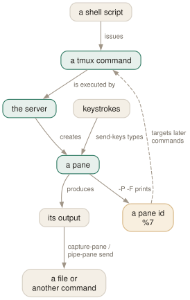

Day 11
Scripting your workspace
One command that rebuilds a whole project, exactly, every time.
By the end of today you can
- write an idempotent script that builds a project session from nothing
- drive panes from outside: send keys, capture output, pipe a pane to a file
- know when to run a command as a pane's process and when to type it into a shell
The payoff
You now know enough to stop building workspaces by hand. A project session — four windows, the right directories, the server already running, the logs already tailing — is twenty lines of shell that you write once and run every morning.
There is no special scripting interface. It is the same commands you have been typing, issued from a shell script, targeting things by id.

-P -F '#{pane_id}' hands you a stable name for the thing it just made, and every later command targets that rather than a position that might have moved. Everything else is ordinary commands in an ordinary shell script.The pattern
Every good tmux bootstrap script has the same skeleton:
#!/bin/sh
set -e
SESSION=api
ROOT=$HOME/src/api
# 1. Idempotence. If it is already there, just go there.
if tmux has-session -t "=$SESSION" 2>/dev/null; then
exec tmux attach -t "=$SESSION"
fi
# 2. Build it detached, so nothing flickers.
tmux new-session -d -s "$SESSION" -c "$ROOT" -n edit
tmux send-keys -t "$SESSION:edit" 'nvim .' Enter
# 3. Capture ids for anything you will talk to again.
tmux new-window -d -t "$SESSION:" -c "$ROOT" -n run
server=$(tmux split-window -d -P -F '#{pane_id}' -t "$SESSION:run" -c "$ROOT")
tmux send-keys -t "$server" 'npm run dev' Enter
tmux select-layout -t "$SESSION:run" main-horizontal
tmux new-window -d -t "$SESSION:" -c "$ROOT" -n git
# 4. Decide where you land.
tmux select-window -t "$SESSION:edit"
exec tmux attach -t "=$SESSION"
Four things in there are doing real work:
=$SESSION- the
=prefix demands an exact name match, so a session calledapiis never confused withapi-staging. -d- everything is built detached. Without it your screen jumps between windows as the script runs, and the terminal size is whatever the last command left.
-P -F '#{pane_id}'- creation commands can print what they created. Capture it in a shell variable and every later command has an unambiguous target.
-c "$ROOT"- set the directory once per window instead of typing
cdinto four shells.
Two ways to start a program, and they are not equivalent
As the pane's command
tmux new-window -n dev 'npm run dev'
tmux split-window 'tail -F log'
The program is the pane. No shell underneath. When it exits the pane closes — unless remain-on-exit says otherwise. Right for long-lived services you do not interact with.
Typed into a shell
tmux new-window -n dev
tmux send-keys -t dev 'npm run dev' Enter
The pane runs your shell; the command is just something typed into it. Ctrl-C gives you a prompt back, with the command in history ready for Up-Enter. Right for anything you will restart, edit, or run variations of.
In practice: services and tails as the pane's command, everything you will fiddle with through send-keys. And when a pane's command dies unexpectedly, remain-on-exit set to failed keeps the pane and its error on screen instead of vanishing the evidence — with respawn-pane -k to bring it back.
Talking to a running pane
send-keys is the general-purpose “type this” command. Key names are looked up, so Enter, C-c and Escape mean what they say; -l sends the argument literally instead.
$ tmux send-keys -t %7 C-c # interrupt whatever is running
$ tmux send-keys -t %7 'make test' Enter # then run something else
$ tmux send-keys -t %7 -N 3 Up # press Up three times
$ tmux send-keys -t %7 -l '$notavar' # literally, no key lookup
Reading is the mirror image:
$ tmux capture-pane -p -t %7 | tail -20 # what is on screen
$ tmux capture-pane -p -S - -t %7 > full.log # the entire history
$ tmux pipe-pane -o -t %7 'cat >>live.log' # tee it from now on
pipe-pane is the interesting one: it attaches a shell command to a pane's output stream and leaves it there. With -o a single binding toggles it, which is today's C-bP. With -I it works the other way — the command's output is written into the pane as though typed, which is how make 2>&1 | tmux splitw -dI puts a build into a new pane without a shell in the middle.
Marked panes: edit here, run there
There is exactly one marked pane on the server at a time. C-bm sets it, C-bM clears it, the window carrying it shows M in the status line, and '~' addresses it from anywhere.
Today's C-bC-r binding uses that for the loop most people do by hand a hundred times a day: mark the pane your tests run in, then from the editor press C-bC-r to send Up and Enter over there. No window switching, no retyping.
bind C-r send-keys -t '~' Up Enter
The mark also serves as the default source for join-pane, swap-pane and swap-window when you leave -s out — which is tomorrow's subject.
Sequencing, and its limits
tmux runs commands from a queue, in order, and a few commands block that queue until something happens: run-shell and if-shell until their shell command finishes, display-panes until a key is pressed. Add -b to run in the background instead.
For genuine synchronisation there is wait-for: one client blocks on a channel, another wakes it. It is how a script waits for something inside a pane to be ready without sleeping and hoping:
# in the script
$ tmux send-keys -t %7 'slow-thing; tmux wait-for -S ready' Enter
$ tmux wait-for ready # blocks until the pane signals
$ tmux send-keys -t %9 'now-the-next-thing' Enter
Restoring layouts
A window's arrangement can be serialised. tmux lsw -F '#{window_layout}' gives you a string like bb62,159x48,0,0{79x48,0,0,79x48,80,0}, and select-layout takes it straight back. That is how session-restoring tools reproduce arrangements no preset can describe — and it is a two-line way to save your own favourite layout in your config:
bind -N "My three-pane layout" M-l \
select-layout 'bb62,159x48,0,0{79x48,0,0,79x48,80,0}'
New vocabulary
Keys
| Key | Does |
|---|---|
| C-bm | Mark this pane. Marked panes are addressable as '~' or {marked}. |
| C-bM | Clear the mark. |
Commands
| Command | Does |
|---|---|
send-keys -t %7 'make' Enter | Type into a pane from outside. Alias send. |
send-keys -l 'literal $text' | Send characters literally, without key-name lookup. |
send-keys -N 5 Up | Repeat a key five times. |
run-shell 'cmd' | Run a shell command with no window; output shown in view mode. Alias run. |
run-shell -b 'cmd' | Same, in the background, not blocking the command queue. |
if-shell 'test -d .git' 'cmd' 'other' | Branch on a shell command's exit status. |
if-shell -F '#{…}' 'cmd' | Branch on a format, with no shell at all. |
pipe-pane -o 'cat >>log' | Copy everything a pane prints to a command; -o toggles. |
capture-pane -p -S - | A pane's whole history on stdout. |
respawn-pane -k 'cmd' | Restart the command in a pane, killing the old one. |
wait-for -S name | Wake up a client blocked on wait-for name. |
select-pane -m | Mark a pane; -M clears the mark. |
Options
| Option | Does |
|---|---|
remain-on-exit | Keep a pane open after its command exits: on, off, failed, key. |
remain-on-exit-format | The text shown at the bottom of a pane that has exited. |
default-command | What a new pane runs when nothing is specified. |
Today's configappend to ~/.tmux.conf
Edit here, run there. Mark the pane your build runs in with C-b m, then C-b C-r sends Up-Enter to it from wherever you are - re-running the last command without leaving the editor. The single best two-pane habit in tmux.
bind -N "Repeat the last command in the marked pane" C-r \
send-keys -t '~' Up Enter
Toggle a log of everything a pane prints. The file name is a format, so each pane gets its own file, and -o makes one binding both start and stop it.
bind -N "Toggle logging this pane" P \
pipe-pane -o 'cat >>$HOME/tmux-#{session_name}-#{window_index}.#{pane_index}.log' \; \
display-message "logging #{?pane_pipe,ON,off}"
Keep a pane that failed, so the error is still on screen. 'failed' means panes whose command exited non-zero; a successful command still closes its pane cleanly.
set -wg remain-on-exit failed
Reload with tmux source-file ~/.tmux.conf and watch for errors in the status line.
Drillsdo these in a real terminal, today
Self-check
Answer out loud first, then unfold.
Why does tmux new-window 'npm run dev' leave you with no window when the server stops, while send-keys 'npm run dev' Enter does not?
Because in the first form the command is the pane's process — when it exits, the pane has nothing left to run and closes, taking the window with it. In the second the pane's process is your shell, and the command is merely something typed into it; when it ends you get your prompt back. Use the first for things that should own the pane, the second for anything you will want to re-run, edit or C-c and restart. Or set remain-on-exit and keep the corpse.
What is wrong with tmux send-keys -t api:1 'make' Enter in a script that ran ten seconds earlier?
Two things. The target may have moved — window and pane indices shuffle — so resolve a #{pane_id} once with -P -F and use that thereafter.
And there is no synchronisation: send-keys types immediately, whether or not the shell in that pane has finished starting. For a shell it is usually fine; for anything slower, either start the program as the pane's command instead of typing it, or use wait-for to have the pane signal when it is ready.
When would you use if-shell -F rather than plain if-shell?
When the condition is about tmux's own state rather than the outside world. Plain if-shell forks /bin/sh and tests its exit status; -F evaluates a format and treats a non-empty, non-zero result as true. In a key binding that fires constantly — a mouse binding, say — the difference between “fork a shell” and “read a variable” is the difference between smooth and sticky. The default mouse bindings are full of if-shell -F for exactly this reason.
What is the marked pane for?
It is a single, server-wide bookmark set with C-bm. Once set, '~' (or {marked}) addresses it from anywhere, and join-pane, swap-pane and swap-window use it as their default source when -s is omitted. It turns two-pane operations into “mark there, act here”, which is much easier than naming a target across a session boundary.
Cheat sheet
tmux has-session -t "=name" 2>/dev/null || build_it # idempotence
tmux new -d -s name -c DIR -n first # always build detached
id=$(tmux splitw -d -P -F '#{pane_id}' -t name:win) # capture ids, target those
tmux send-keys -t "$id" 'cmd' Enter # type into it
tmux capture-pane -p -S - -t "$id" # read back out
tmux pipe-pane -o -t "$id" 'cat >>log' # tee, toggleable
tmux select-layout -t name:win main-horizontal
neww 'cmd' -> cmd IS the pane; it closes when cmd exits (remain-on-exit)
send-keys -> cmd is typed into a shell; you keep the prompt
C-b m / C-b M mark a pane; -t '~' targets it (join/swap default to it)
wait-for name / wait-for -S name -- synchronise; never sleep
Everything through Day 11
Keys
| Key | Does |
|---|---|
| C-bd | Detach this client. The session keeps running. |
| C-b$ | Rename the current session. |
| C-b? | List every key binding. q to leave. |
| C-b: | Open the tmux command prompt. |
| C-bt | Show a clock — a harmless way to prove the prefix works. |
| C-bC-b | Send a literal C-b to the program in the pane. |
| C-bc | Create a window at the lowest free index. |
| C-b, | Rename the current window — and pin the name. |
| C-bn | Next window by index. |
| C-bp | Previous window by index. |
| C-bl | Back to the last window you were in. The one to actually learn. |
| C-b0 | Jump straight to window 0 (likewise 1 … 9). |
| C-b' | Prompt for a window index — for windows above 9. |
| C-bw | Choose a window from an interactive tree with previews. |
| C-b& | Kill the current window, after a confirmation. |
| C-b. | Move the current window to a different index. |
| C-bi | Flash some information about the current window. |
| C-b% | Split left/right. The |-shaped key gives you a |-shaped border. |
| C-b" | Split top/bottom. |
| C-bLeft | Move to the pane to the left (likewise Right, Up, Down). |
| C-bo | Next pane in creation order. |
| C-b; | The previously active pane — the C-bl of panes. |
| C-bq | Flash the pane numbers; press a digit while they show to jump there. |
| C-bz | Zoom: this pane fills the window. Press again to restore. |
| C-bx | Kill this pane, after a confirmation. |
| C-bSpace | Cycle to the next preset layout. |
| C-bM-1 | even-horizontal — side by side in a row. |
| C-bM-2 | even-vertical — stacked in a column. |
| C-bM-3 | main-horizontal — one big pane on top. |
| C-bM-4 | main-vertical — one big pane on the left. |
| C-bM-5 | tiled — a grid. |
| C-bE | Spread the current pane and its neighbours out evenly. |
| C-bC-Left | Resize by one cell (hold to repeat). M-Left does five. |
| C-b{ | Swap this pane with the previous one; C-b} with the next. |
| C-bC-o | Rotate every pane through the layout; C-bM-o rotates back. |
| C-b* | Open a floating pane over the window — hovers above the layout. |
| C-b[ | Enter copy mode at the bottom of the history. |
| C-bPageUp | Enter copy mode already scrolled one page up. |
| C-b] | Paste the most recent buffer into this pane. |
| C-b= | Choose which buffer to paste, from a list with previews. |
| C-b# | List the paste buffers. |
| C-b- | Delete the most recent buffer. |
| q | In copy mode: leave. (Escape in emacs mode.) |
| /? | vi mode: search forward / backward; n and N repeat. |
| C-sC-r | emacs mode: incremental search forward / backward. |
| Space | vi mode: start a selection. C-Space in emacs mode. |
| v | vi mode: toggle rectangle (block) selection. R in emacs mode. |
| Enter | vi mode: copy the selection and leave. M-w in emacs mode. |
| gG | vi mode: top / bottom of the history. |
| C-bC | Customize mode: browse and change every option and key, with descriptions. |
| C-bR | Reload ~/.tmux.conf — after you add today's binding. |
| C-bs | Choose a session from the tree — with previews, tagging and filtering. |
| C-b( | Switch this client to the previous session. |
| C-b) | Switch this client to the next session. |
| C-bL | Switch back to the last session. The C-bl of sessions. |
| C-bD | Choose a client from a list and detach it. |
| C-b$ | Rename the current session. |
| C-b/ | Describe a key: press it and tmux tells you what it is bound to. |
| C-b? | List every binding in every table — really list-keys -N. |
| C-bM-n | Go to the next window with an alert. |
| C-bM-p | Go to the previous window with an alert. |
| C-bt | The clock — which is really clock-mode, styled by clock-mode-colour. |
| C-bm | Mark this pane. Marked panes are addressable as '~' or {marked}. |
| C-bM | Clear the mark. |
Commands
| Command | Does |
|---|---|
tmux | Start the server if needed and create a session, attached. |
tmux new -s work | Create a session named work. |
tmux new -A -s work | Attach to work, creating it only if absent. |
tmux ls | List sessions on this server. Alias for list-sessions. |
tmux attach -t work | Attach this terminal to work. |
tmux attach -d -t work | Attach, detaching any other client first. |
tmux detach | Detach the current client, from inside or by target. |
tmux rename-session api | Rename the current session. |
tmux kill-session -t work | Destroy a session and everything in it. |
tmux kill-server | Destroy every session. The nuclear option. |
new-window | Create a window. Alias neww. |
new-window -n logs | Create it with a fixed name. |
new-window -c ~/src/api | Create it with that working directory. |
new-window -d | Create it but do not switch to it. |
new-window -a -t 2 | Insert after window 2, shifting the rest along. |
rename-window api | Rename the current window. |
select-window -t :3 | Switch to window 3 of the current session. |
last-window | Switch to the previously current window. |
kill-window -t :logs | Kill a window by name. |
list-windows | List windows in the session. Alias lsw. |
choose-tree -w | The interactive picker behind C-bw. |
split-window -h | Split left/right. Alias splitw. |
split-window -v | Split top/bottom. The default if neither is given. |
split-window -c ~/src | Start the new pane in that directory. |
split-window -l 30% | Give the new pane 30% of the space (-l 20 for cells). |
split-window -b | Put the new pane before — above or to the left of — the old one. |
split-window -f -h | Split the full window height, not just the current pane. |
select-pane -L | Move to the pane on the left (-R -U -D likewise). |
select-pane -t 2 | Move to pane 2 of this window. |
last-pane | Back to the previously active pane. |
resize-pane -Z | Toggle zoom. |
resize-pane -x 100 -y 30 | Resize to an absolute size, cells or %. |
select-layout tiled | Apply a named layout. |
select-layout -E | Spread evenly (what C-bE runs). |
select-layout -o | Undo the most recent layout change. |
list-panes | List panes with index, size and command. Alias lsp. |
kill-pane -a | Kill every pane except this one. |
swap-pane -D | Swap with the next pane, keeping focus behaviour sane. |
copy-mode | Enter copy mode; -u starts a page up, -e exits at the bottom. |
send-keys -X begin-selection | How every copy-mode key is implemented. -X means “to the mode”. |
list-buffers | Show the buffer stack. Alias lsb. |
set-buffer "text" | Put a literal string into a buffer from a script. |
load-buffer file | Read a file into a buffer (- for stdin). |
save-buffer file | Write a buffer out to a file (- for stdout). |
show-buffer | Print the newest buffer. |
paste-buffer -t :1.0 | Paste into a specific pane, not necessarily this one. |
delete-buffer -b name | Remove one buffer. |
capture-pane -p -S -3000 | Dump the last 3000 lines of history to stdout. |
clear-history | Throw away a pane's scrollback. Alias clearhist. |
set-option -g name value | Set a global session option. Alias set. |
set-option -w name value | Set a window option (for the current window). |
set-option -p name value | Set a pane option (for the current pane). |
set-option -s name value | Set a server option. |
set-option -u name | Unset, so the value is inherited again. |
set-option -a name value | Append to a string or style option instead of replacing it. |
show-options -g | Show global session options. Alias show. |
show-options -A | Show them including inherited values, marked with *. |
show-options -gv history-limit | Print just the value of one option. |
source-file ~/.tmux.conf | Run a file of tmux commands now. Alias source. |
customize-mode | The interactive option browser behind C-bC. |
new-session -d -s api | Create a session in the background and stay where you are. |
new-session -A -s api | Attach if it exists, create if it does not. |
new-session -c ~/src/api -s api | Create with a starting directory. |
switch-client -t api | Move this client to another session, without detaching. |
switch-client -l | Back to the previous session. |
has-session -t api | Exit 0 if it exists. The if in every wrapper script. |
attach-session -d -t api | Attach here and detach whoever else was looking. |
list-clients | Which terminals are attached to what. Alias lsc. |
detach-client -s api | Detach every client from that session. |
kill-session -a | Kill every session except the current one. |
choose-tree -Zs | The session picker behind C-bs. |
tmux neww \; splitw -h | Two commands in one invocation. Note the escaped semicolon. |
display-message -p '#{pane_id}' | Print a value to stdout instead of the status line. |
list-panes -a | Every pane on the server, not just this window. |
list-windows -a | Every window on the server. |
list-sessions -F '#{session_name}' | One field per line — the shape scripts want. |
list-commands | Every command tmux knows, with its synopsis. Alias lscm. |
list-commands neww | The synopsis for one command. |
bind-key c new-window | Bind in the prefix table. Alias bind. |
bind-key -n M-Left select-pane -L | Bind without a prefix (-n = -T root). |
bind-key -r H resize-pane -L | Repeatable: keep tapping without re-pressing the prefix. |
bind-key -N "note" x cmd | Attach a note, shown by C-b?. |
bind-key -T mytable g cmd | Bind in a table of your own. |
unbind-key -T prefix x | Remove a binding. Alias unbind. |
list-keys -T copy-mode-vi | Read a whole mode as data. Alias lsk. |
list-keys -N | Only keys with notes, in a readable form. |
send-keys -X copy-selection | Send a command into a mode. |
send-prefix | Pass the prefix key through to the program. |
switch-client -T mytable | Make the next key be looked up in another table. |
display-message -p '#{…}' | Evaluate a format and print it. The echo of tmux. |
display-message -a | List every format variable with its current value. |
display-message -v '#{…}' | Show how the format is parsed, step by step. |
list-panes -f '#{…}' | Filter a listing by a format that evaluates true. |
if-shell -F '#{…}' cmd | Run a command when a format is non-empty and non-zero. |
set-option -F name '#{…}' | Expand the format now and store the result. |
refresh-client -S | Redraw the status line right now. |
show-options -g status-format | Read the default status line's own definition. |
display-menu -T title name key cmd | Pop up a menu — what the status line's mouse bindings use. |
send-keys -t %7 'make' Enter | Type into a pane from outside. Alias send. |
send-keys -l 'literal $text' | Send characters literally, without key-name lookup. |
send-keys -N 5 Up | Repeat a key five times. |
run-shell 'cmd' | Run a shell command with no window; output shown in view mode. Alias run. |
run-shell -b 'cmd' | Same, in the background, not blocking the command queue. |
if-shell 'test -d .git' 'cmd' 'other' | Branch on a shell command's exit status. |
if-shell -F '#{…}' 'cmd' | Branch on a format, with no shell at all. |
pipe-pane -o 'cat >>log' | Copy everything a pane prints to a command; -o toggles. |
capture-pane -p -S - | A pane's whole history on stdout. |
respawn-pane -k 'cmd' | Restart the command in a pane, killing the old one. |
wait-for -S name | Wake up a client blocked on wait-for name. |
select-pane -m | Mark a pane; -M clears the mark. |
Options
| Option | Does |
|---|---|
automatic-rename | Window renames itself after the running command. On by default. |
automatic-rename-format | The format used when it does. Defaults to the pane's command. |
allow-rename | Whether a program in the pane may rename the window by escape sequence. |
main-pane-width | Width of the big pane in the main-vertical layouts. Accepts %. |
main-pane-height | Height of the big pane in the main-horizontal layouts. |
tiled-layout-max-columns | Cap the columns in the tiled layout; 0 means no cap. |
mode-keys | vi or emacs key bindings inside copy mode. Default emacs. |
history-limit | Lines of scrollback kept per pane. Default 2000, which is stingy. |
copy-command | Shell command that bare copy-pipe pipes to — your clipboard tool. |
set-clipboard | Whether tmux sets the terminal's clipboard with OSC 52. |
word-separators | What counts as a word boundary for w and b. |
wrap-search | Whether searches wrap around the end of the history. On by default. |
base-index | Index the first window gets. Default 0. |
pane-base-index | Index the first pane gets. Default 0. A window option. |
renumber-windows | Close the gaps in window indices when one is killed. |
escape-time | Milliseconds tmux waits to decide whether Escape began a key sequence. |
focus-events | Pass terminal focus in/out through to the programs in panes. |
display-time | How long status line messages stay up. 750 ms by default. |
default-terminal | The $TERM new panes get. Must be a screen/tmux derivative. |
detach-on-destroy | What a client does when its session dies. off moves it to another session instead. |
destroy-unattached | Destroy a session once the last client leaves. Off by default, and rightly. |
default-size | Size for sessions created detached, when no client dictates one. |
window-size | Whether a window sizes to the largest, smallest or latest attached client. |
aggressive-resize | Size each window to the clients actually viewing it, not the whole session. |
command-alias | Server option: an array of your own command aliases. |
prefix | The prefix key. None disables it entirely. |
prefix2 | A second prefix key, for when you want both C-b and C-a. |
repeat-time | Milliseconds the prefix stays live after a -r key. Default 500. |
initial-repeat-time | The same, for the first press of a repeat sequence. |
key-table | Which table a client starts in. The lever behind modal setups. |
pane-border-format | What is drawn on a pane's border line. |
pane-border-status | Where that line goes: off, top, bottom. |
automatic-rename-format | The format used to rename windows automatically. |
status | off, on, or 2–5 for a taller status line. |
status-position | top or bottom. |
status-style | The base style for the whole line. |
status-left | The left segment. A format. Truncated to 10 columns by default. |
status-left-length | How wide the left segment may be. Raise it before anything else. |
status-right | The right segment. Also a format, also length-limited (40). |
status-justify | Where the window list sits: left, centre, right, absolute-centre. |
status-interval | Seconds between redraws. 15 by default; matters if you use #(). |
window-status-format | How each window is drawn in the list. |
window-status-current-format | How the current one is drawn. |
window-status-separator | What goes between them. A space by default. |
window-status-style | Style for a window entry; -current-, -activity-, -bell-, -last- variants exist. |
monitor-activity | Flag windows where output appeared while you were away. |
monitor-bell | Flag windows that rang the terminal bell. |
monitor-silence | Flag windows that have been quiet for N seconds. |
visual-activity | Show a message instead of (or as well as) ringing the bell. |
activity-action | any / none / current / other — which windows count. |
remain-on-exit | Keep a pane open after its command exits: on, off, failed, key. |
remain-on-exit-format | The text shown at the bottom of a pane that has exited. |
default-command | What a new pane runs when nothing is specified. |